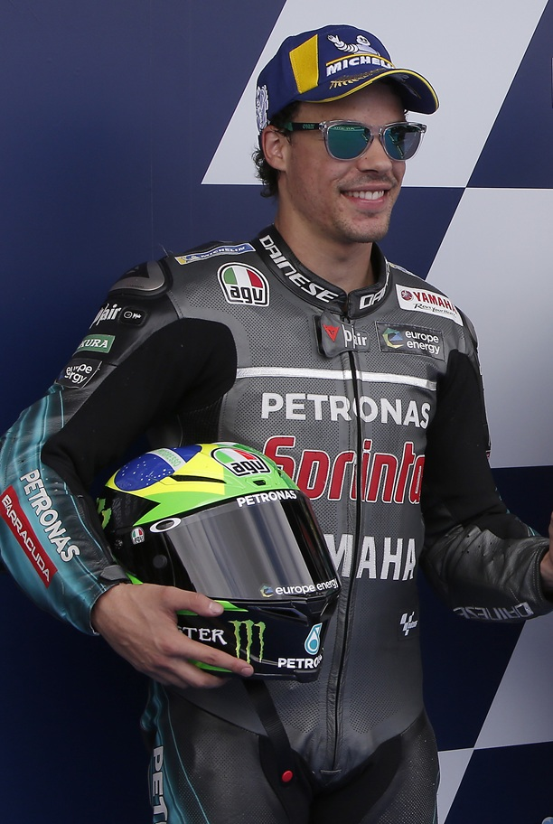

Franco Morbidelli es un piloto de motociclismo italiano-brasileño. Ha sido campeón del Campeonato Mundial de Motociclismo en la categoría de Moto2 en 2017 y subcampeón de MotoGP en 2020 con el equipo Petronas Yamaha. En 2025 compite en el Pertamina Enduro VR46 Racing Team con Fabio Di Giannantonio. En 2013 se coronó campeón de Europa en Superstock 600 con una Kawasaki ZX-6R.

Fecha de nacimiento: 4 de diciembre de 1994
Lugar de nacimiento: Roma, Italia
Altura: 1,76 m
Peso: 64 kg
Moto: Ducati Desmosedici GP24
Dorsal: 21
Thai Honda PTT Gresini Moto2
Italtrans Racing Team
EG 0,0 Marc VDS
Petronas Yamaha SRT
Monster Energy Yamaha MotoGP
Prima Pramac Racing
Pertamina Enduro VR46 Racing Team
Chicane
Curvas pronunciadas en un circuito para reducir la velocidad de las motos
Pole
Posición de privilegio en la parrilla de salida de una carrera de MotoGP, obtenida tras la sesión de clasificación
Tacómetro
Herramienta para saber las revoluciones del motor
Control de tracción
Sistema electrónico que utiliza sensores en las ruedas para detectar si la rueda trasera está girando demasiado rápido
Apex
Punto interior de una curva, y tomar una buena trazada pasando por él es clave para levantarse de la moto y acelerar rápidamente
Franco Morbidelli también es hijo de Livio Morbidelli, expiloto de motociclismo, hizo su debut en el Campeonato de Europa de Superstock 600 en 2011, corriendo cuatro carreras a bordo de una Yamaha YZF-R6 del equipo Forward Racing Jr. En 2012 terminó en el sexto lugar y en 2013 se consagró campeón Europeo con una Kawasaki ZX-6R del equipo San Carlo Italia.